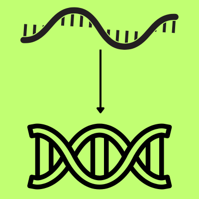
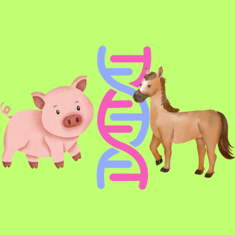

Score: 0 / 0
DNA Denaturation
-
DNA denaturation is the process of separating the two strands of the
double helix, typically induced by heat or chemical treatment.
-
Reannealing occurs when the denatured strands come back together,
forming a stable double helix again.

-
Hybridization refers to the binding of complementary DNA or RNA strands
from different sources, often used in techniques like blotting and
microarray analysis.

Dive deeper: The melting temperature is the temperature at which half of the DNA strands become single-strandeD. Although the number of hydrogen bonds between the base pairs contributes to the stability of the double helix, other factors such as the length of the DNA and the concentration of salt in the solution also play important roles in determining the melting temperature.The salt concentration affects the shielding of negative charges on the DNA backbone, influencing the stability of the double helix. When the temperature is normal, denaturation requires energy input to overcome the hydrogen bonding and base stacking interactions that stabilize the double helix.
Practice Questions
Which of the following is an example of hybridization? Type the letter of the answer: B
A. DNA strands separate due to heat
B. Binding of a horseshoe crab DNA to a human DNA probe
C. DNA strands binding due to a cooling process
D. DNA strands forming a double helix
Which statement best describes melting temperature? Type the letter of the answer: C
A. The temperature at which all DNA strands become single-stranded
B. The temperature at which all DNA strands bind together
C. The temperature at which half of the DNA strands become single-stranded
D. The temperature at which half of the DNA strands bind together